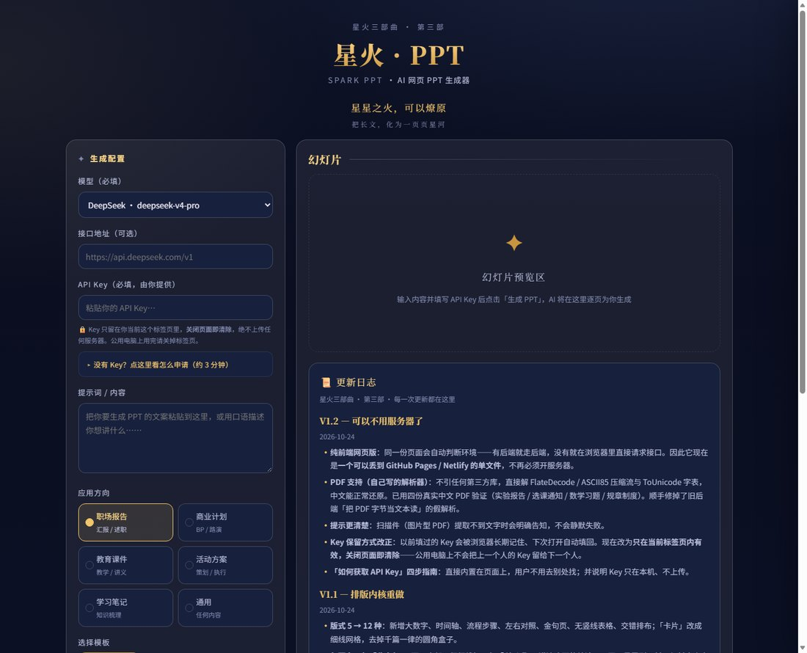
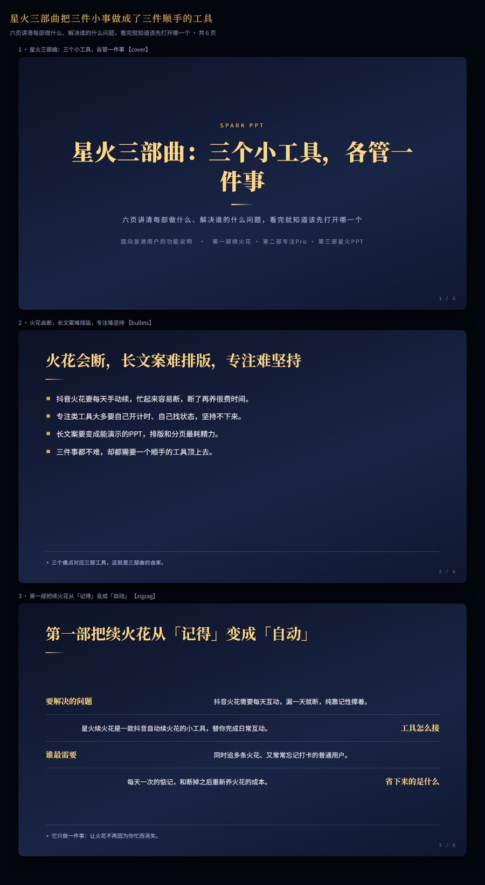
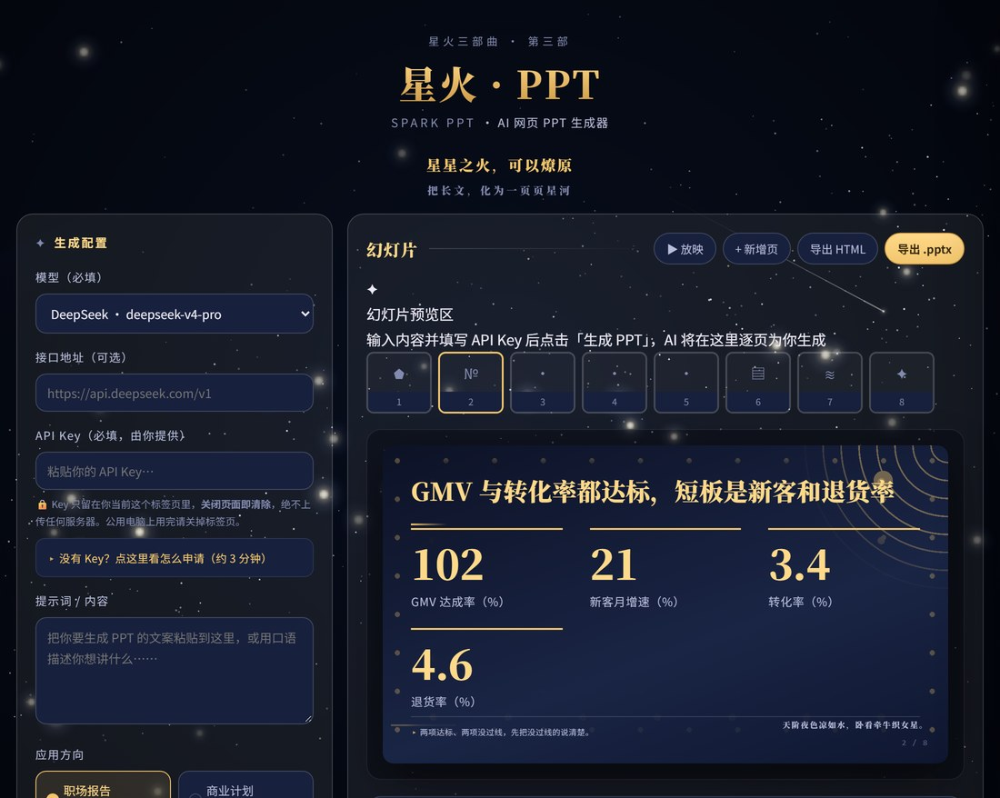

一页一页长出来，想改哪页改哪页
内容贴进去，第一页先出来，后面的跟着往下长——不用等整份做完才看得见。哪页觉得不对，点开直接改字，不用把整份推倒重来。手边有参考资料也行，PDF 一起丢进去，它自己读。
醉后不知天在水，
满船清梦压星河。
把想说的话贴进去，它自己分页、自己排版、自己起标题——不用学提示词，不用挑模板，也不用跟格式较劲。每一页都有一句结论，翻到第五页也不重样。做完直接导出就能讲：发个网页给人看，或者存成 .pptx 接着改。第三部守护表达——把心里的话，做成能讲给世界听的样子。

内容贴进去，第一页先出来，后面的跟着往下长——不用等整份做完才看得见。哪页觉得不对，点开直接改字，不用把整份推倒重来。手边有参考资料也行，PDF 一起丢进去，它自己读。
长夜星火、月白清光、青峰林海、鎏金案牍、紫雾星海、沧海深蓝。讲给谁听，就挑哪一种气质——换一套，整份的颜色、字体、留白一起换，字一个都不用重写。

一个网页，手机电脑都能开，不用下载、不用登录服务器。做完能导成网页发给别人——点开就全屏讲；也能存成 .pptx，回到 PowerPoint 或 WPS 接着改。每次做的都留在本地，关掉再回来还在。
别人是「让 AI 顺便排个版」，星火PPT 是「AI 负责想，排版交给规则」。
12 种版式与一套设计纪律都写进了代码：标题必须给结论、每页必须补一句收束、相邻两页不许同版式。你只要贴内容。
6 套成体系配色内置，一键换整份，每套都调过对比度；不用去模板站挑、不用为了一个版式买会员。
字号层级、左右边距、中文避头尾由排版内核负责；内容真的超了，还会自动降一档字号，不会把字裁掉。
| 维度 | 直接在对话里让 AI 做个 PPT | 星火PPT |
|---|---|---|
| 排版由谁负责 | 模型临时写代码或套通用模板，每次结果都不一样 | 模型只选版式、填内容，样式由确定性渲染器写死——它碰不到 CSS |
| 版式多样 | 多数页都是「标题 + 几条要点」，翻到第五页就开始重样 | 12 种版式现场编排：大数字、时间轴、流程、左右对照、金句、表格、交错……相邻两页不许重复 |
| 页标题 | 「背景」「概述」「核心功能」这类栏目名 | 必须是结论句，只读一遍标题就能把整个故事讲完 |
| 每页有没有结论 | 没有，只是把要点罗列出来 | 每页强制一句「收束句」，落在页脚细线下方 |
| 排版会不会翻车 | 对不齐、文字溢出、字号忽大忽小，得自己返工 | 启动时自检 12 种版式是否真能渲染；内容溢出自动降档；中文避头尾 |
| 换一种风格 | 回模型重新生成一遍，内容可能也变了 | 一键换整份配色，内容一个字都不用重写 |

从一段文字到一页星河，每步都踩实。
粘贴文案，选择模板与应用方向——AI 自动拆分章节、设计页面结构，一次把整份 PPT 的骨架搭好。
一页一页往外长，边出边看；哪页不满意，点开就改，不用从头来过。写完直接全屏放一遍，看看站上台是什么效果。
能发个网页给别人——点开就全屏讲，什么都不用装；也能存成 .pptx，回到 PowerPoint 或 WPS 接着改。做过的都留在本地，随时翻回去。
星火PPT 第一次能用了：贴上自己的话，选一套喜欢的样式，它把内容拆成一页一页；每页可以改，能全屏放，能导出带走，做过的都留着。
新增大数字、时间轴、流程步骤、左右对照、金句页、无竖线表格、交错排布；「卡片」改成细线网格，去掉千篇一律的圆角盒子。每页底部补一句「收束句」，标题从栏目名改成一句结论。排版随舞台等比缩放、溢出自动降档，启动时还会逐个校验 12 种版式画不画得出来。导出 .pptx 同步补全全部版式。
以前要开一台服务器，现在一个网页就够——手机、电脑，打开就能做。参考资料是 PDF 也能直接丢进去，它自己把字读出来。Key 改成关掉页面就清掉，公用电脑上不留痕；输入框下面还放了四步申请指南，不会申请照着点就行。
贴进去的话太糙也不要紧——点一下「帮我优化提示词」，它先把你的素材整理成一份更完整的：读者是谁、该讲几页、主线是什么、语气怎么拿。整理完你可以直接改，满意了再开始生成。
不是换个颜色就算一套——每套在底色气质、标题字体、字重字距、列表标记、装饰形态五个维度上都不一样。12 套各配一个视觉母题：星轨、月相、山峦、印章、雾带、波浪……
新增横向条形、进度条、占比环三种数据图。更要紧的是导出：以前点导出会给你一段 Python 代码让你自己跑，现在直接给 .pptx；里面的图表是 PowerPoint 里的真形状，不是拿文字拼的，装饰也按同一套母题画出来。
不再所有方向套同一个结构——路演、汇报、答辩、提案各有自己的页序骨架，而且每一页都写明「这一页必须写什么」，不是只给一个页名让你自己猜。
这是最难的一关。以前网页和导出是两套各自排版的程序，必然越走越偏。后来换了办法：先量网页，再照抄成形状。渐变、圆弧、圆角卡片一个个抄过来，连长标题溢出这种老毛病也一并修了。
生成时进度条下方多了一个「停止生成」——点一下就停，已经出来的页面留着，能直接改。哪一页不满意，单独重做那一页就行，不用整份推倒。
生成前多了一个「讲给谁听」的开关：演讲要少而大，一页一个想法；阅读要多而全，一页能装下整段。还能先出三张封面给你挑，挑中了再按那个气质整套生成——不用等整份做完才发现风格不对。